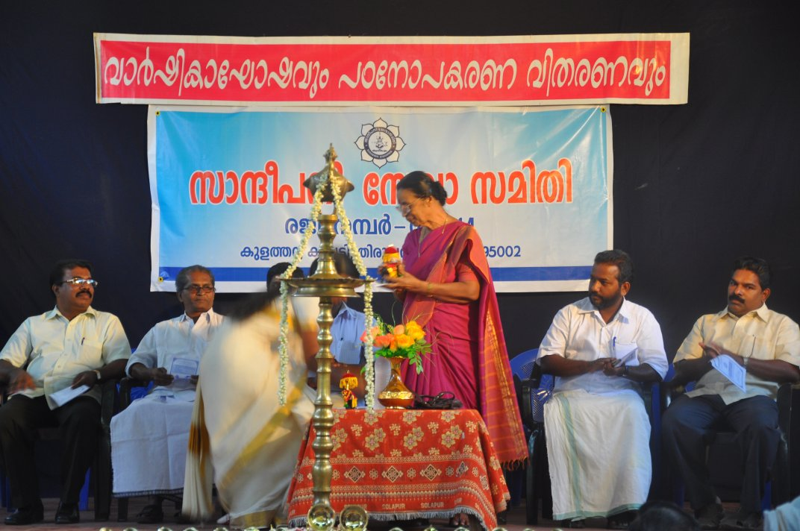
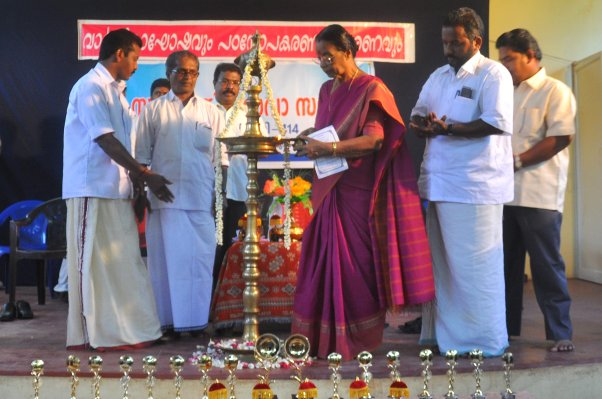
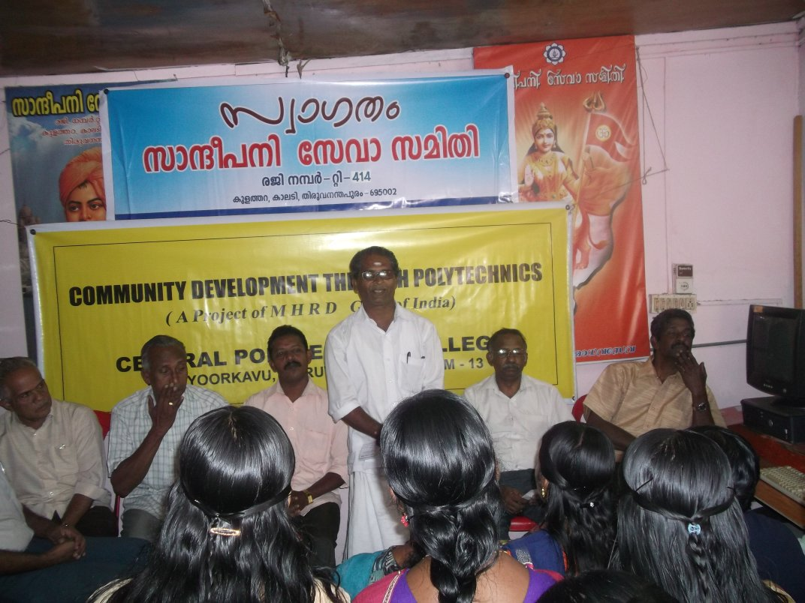
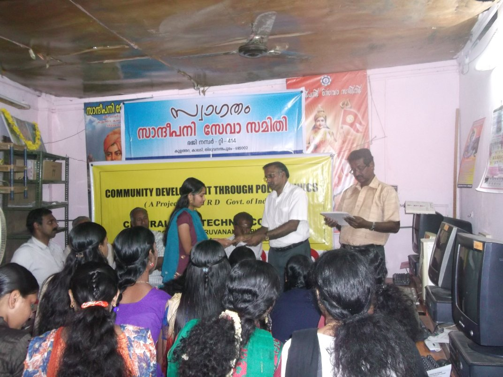
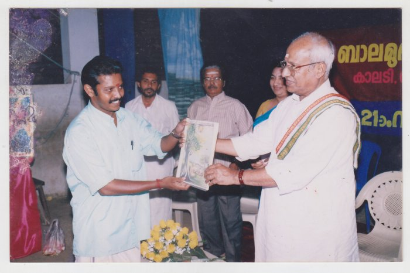

Photo Gallery
    Sandeepani Seva Samithi
Sandeepani Seva Samithi is a charitable society run by a group of young and energetic youth residing around Kalady, Kulathara and Thaliyal area. Read more..
About Us
SANDEEPANI SEVA SAMITHI - MISSION
To provide quality and inclusive education based on Indian heritage especially for the rural unreached segments of economically downtordden students including wemen, socially oppressed and differently abled. Read more..